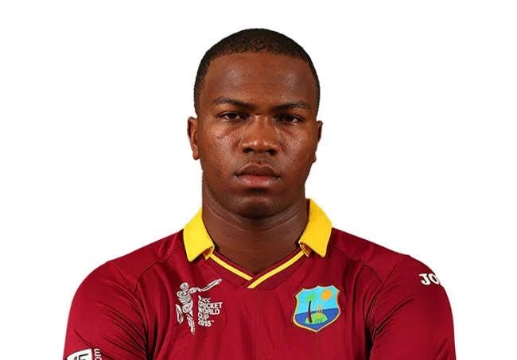
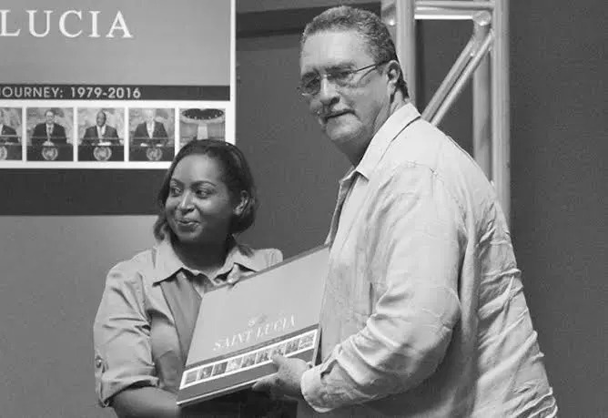

School Anniversary Parade
A celebration of school history, student participation, and community pride.


Established 26 October 1985
A welcoming secondary school community in Castries, Saint Lucia, shaped by learning, participation, and the confidence to contribute.
01 · The school
Leon Hess Comprehensive Secondary School is a secondary school in Castries, Saint Lucia, serving Forms 1 through 5. We operate as a learning community where strong teaching, clear routines, student participation, pastoral support, co-curricular activity, and respect for others work together. Students are encouraged to take responsibility for their progress, contribute to school life, and prepare for the next stage of education and citizenship.
The school day brings together classroom learning, assessment, guidance, assemblies, clubs, sport, and school-wide events. Staff, students, families, and community partners each play a part in creating a safe, organised, inclusive environment where students can discover their strengths and build confidence.
Teachers plan and deliver learning across the curriculum while students develop knowledge, practical skills, communication, and responsibility. Progress is supported through classwork, assessment, feedback, and guidance.
Students can take part in clubs, leadership groups, athletics, celebrations, and service activities. These experiences help connect academic learning with teamwork, creativity, discipline, and community.
The school works with families, the Ministry of Education, and community partners to support student wellbeing, attendance, achievement, and preparation for life beyond secondary school.
01A · Clubs
Clubs give students practical ways to lead, serve, create, investigate, communicate, and support one another beyond the classroom.
Discipline, teamwork, leadership, and service.
Peer awareness and healthy choices.
Student support, listening, and encouragement.
Curiosity, investigation, and practical discovery.
Reading, writing, speaking, and creative expression.
Digital skills, problem-solving, and technology.
Research, reasoning, public speaking, and respectful discussion.
Visual storytelling and documenting school life.
Strategy, concentration, planning, and fair play.
Positive identity, mentorship, and responsibility.
Confidence, support, ambition, and leadership.
Student voice, representation, and school improvement.
02 · Academics
Forms 1–3 provide the lower-secondary foundation. Forms 4–5 support students as they prepare for senior secondary subjects and external examinations.
Subject availability, class placement, examination offerings, and timetable details can change. Families should confirm the current programme directly with the school.
Families can confirm current CSEC and CXC subject offerings, examination requirements, and preparation support directly with the school.
Technical and vocational subjects connect classroom learning with practical skills. Availability can vary by year and timetable.
Students and families should discuss subject choices, prerequisites, and progression with the school before registration.
03 · New Student Enquiry
Ask about Form 1 placement, transfer spaces, required records, and deadlines.
New Student EnquiryPrepare student identification, previous school records, examination results, and parent/guardian contact details.
View contactsUse the Ministry contact channels for official education policy and placement guidance.
Ministry website04 · School activities
School activities bring students, staff, families, and the wider community together. Scroll across each gallery to view the photographs.
A celebration of school history, student participation, and community pride.
A cultural celebration honouring Saint Lucian heritage through creativity and shared participation.


A spirited school-wide event connecting athletics, teamwork, house pride, and healthy competition.


Jesse
Ellis
Bourne
Leon
05 · Contact
Telephone
(758) 452-5975
Location
Leon Hess School Road, Quatre Chemins, Castries, Saint Lucia
Open map directions ↗
Ministry of Education, Youth Development, Sports and Digital Transformation
4th Floor, Francis Compton Building
Waterfront, Castries, Saint Lucia
Telephone
(758) 468-5202 · 5206 · 5207 · 5208
(758) 451-6725
Past students
This section celebrates former Leon Hess students and the paths they have taken beyond secondary school.
Past students
These profiles celebrate former Leon Hess students and their achievements.
Saint Lucian sprinter and Olympic champion, recognised for major international achievements in the 100 metres and 200 metres.

Saint Lucian international cricketer who represented the West Indies across Test, One Day International, and T20 cricket.
Minister for Education, Youth Development, Sports and Digital Transformation
Past student of Leon Hess Comprehensive Secondary School. He serves as the Member of Parliament for Gros Islet and Minister for Education, Youth Development, Sports and Digital Transformation. Prior to entering elective politics, he established a distinguished career in broadcasting, teaching, and youth advocacy across Saint Lucia.

Permanent Representative of Saint Lucia to the United Nations
Past student of Leon Hess Comprehensive Secondary School and prominent Saint Lucian diplomat and public servant. She broke history as the youngest Member of Parliament in Saint Lucia, served in several cabinet ministerial portfolios, and currently represents Saint Lucia as Ambassador to the United Nations.